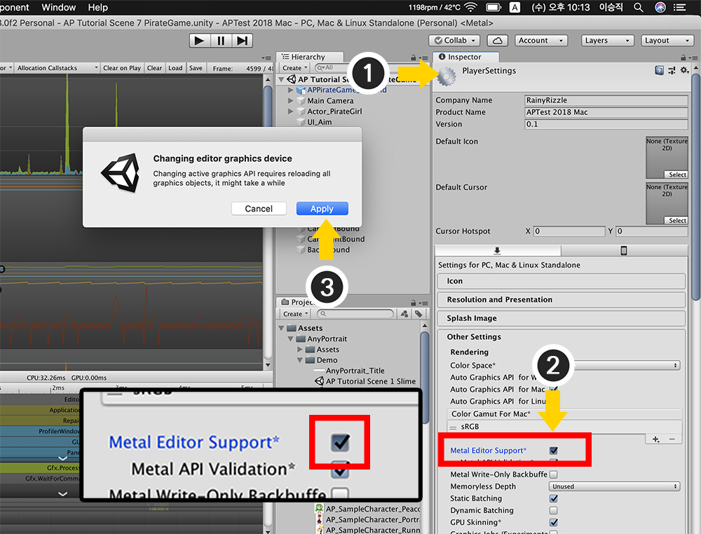
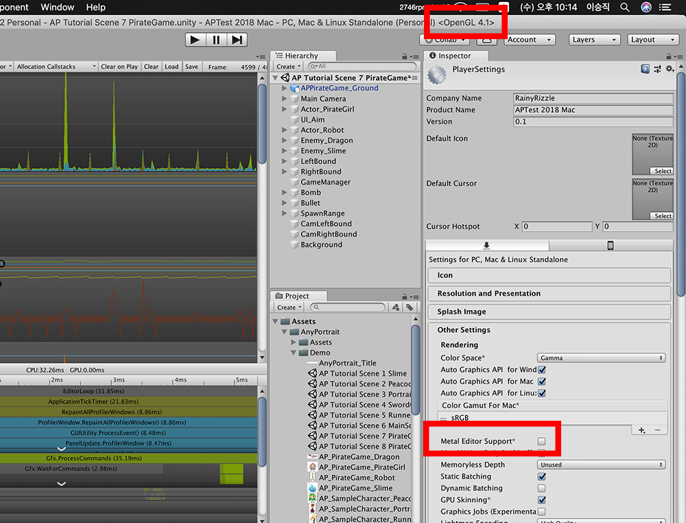

AnyPortrait > Manual > Performance issue on Mac
Performance issue on Mac
1.0.0
When running Unity on a Mac device, in the macOS Mojave, AnyPortrait slows down every few seconds.
This phenomenon is called the "Stuttering problem".
The rendering method "Metal" provided by MacOS Mojave and Unity is caused by poor performance in AnyPortrait.
If you re-run Unity on occasion, this problem may be solved, but if not, try using the method described below.

The above image shows the running AnyPortrait editor in Unity 2018 running on macOS Mojave.
At this time, even if the measured FPS value is high, the actual performance of the editor may drop periodically.

The profiler was used to measure the performance of the editor.
You can see that the performance of the editor running above 60 FPS drops to 15 FPS every 2 to 3 seconds.

(1) Open the Player Settings screen. There are two ways to do this.
- Open File > Build Settings from the Unity menu and click the "Player Settings ..." button.
- Open Edit> Project Settings from the Unity menu and select the Player menu.
(2) Turn off Metal Editor Support*.
(3) An information message appears. Click the Apply button.

When the Metal Editor Support setting is turned off, you can see Unity Editor rendering from Metal to OpenGL.

If you run AnyPortrait, you'll see that the performance issue has been resolved.
When you measure AnyPortrait with a profiler, the minimum frame will be improved to 60 FPS.
Performance of AnyPortrait Editor
The RainyRizzle team is constantly working to improve the performance of the AnyPortrait editor.
However, due to factors such as updates of Unity or OS, differences in development environments, sometimes unexpected performance problems are reported.
If you are experiencing performance issues, please feel free to contact us.
- Report Page